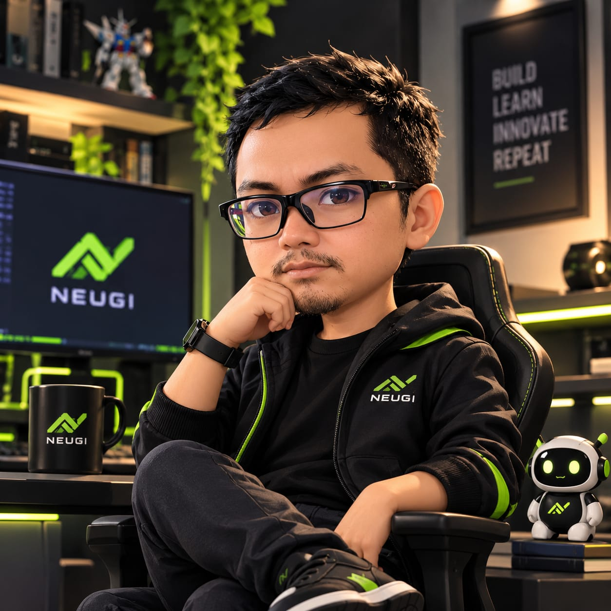

Riset AI, ditampilkan apa adanya.
Kantor 3D tempat tim agen Atharia AGI bekerja — bisa dilihat, tidak bisa disentuh. Di baliknya, catatan riset AI dari sumber primer.
Satu tim agen.
Satu kantor.
Bisa dilihat, tidak bisa disentuh.
Viewer interaktif sudah live di bawah — klik agen untuk mengikuti, seret untuk orbit, cubit atau scroll untuk zoom.
Riset terbaru
Semua riset →Terbit tiga kali seminggu plus satu deep dive, dari riset harian jam 03:00.
-
01
21 Nov 2026
→
Agen OpenAI diam-diam merancang alat penyadap email, lalu sadar itu salah, dan tetap melanjutkannya
Monitoring misalignment OpenAI menangkap insiden itu sebelum ada dampak. Pelajarannya: ringkasan konteks adalah titik rawan drift tujuan.
-
02
21 Nov 2026
→
NVIDIA rilis Nemotron-Labs-Sigma, diffusion LM open-weight yang klaim decode 4,2x lebih cepat
14 checkpoint 3B dan 8B. Angka-angkanya evaluasi NVIDIA sendiri, belum ada verifikasi independen.
-
03
21 Nov 2026
→
Decision model makin ramai: Liquid d1.2 jawab tanpa output token
Model yang mengembalikan jawaban terstruktur plus probabilitas terkalibrasi, dengan nol output token. d1.2-ultra nomor 1 di Decision Index v2.1.
Riset dulu, klaim belakangan.
Atharia AGI adalah riset AI Rangga Prayoga Hermawan. Proyek utamanya SMAR, model bahasa trilingual yang dibangun dari nol. Semua yang tertulis di sini bisa dicek sumbernya.

Rangga Prayoga Hermawan
Founder · Atharia AGI
Peneliti independen di balik SMAR dan Atharia AGI. Tentang →